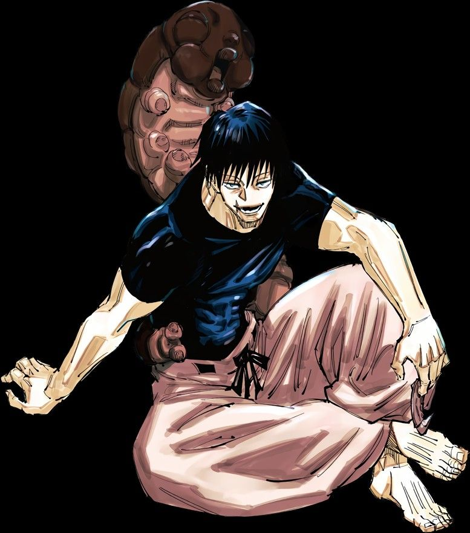
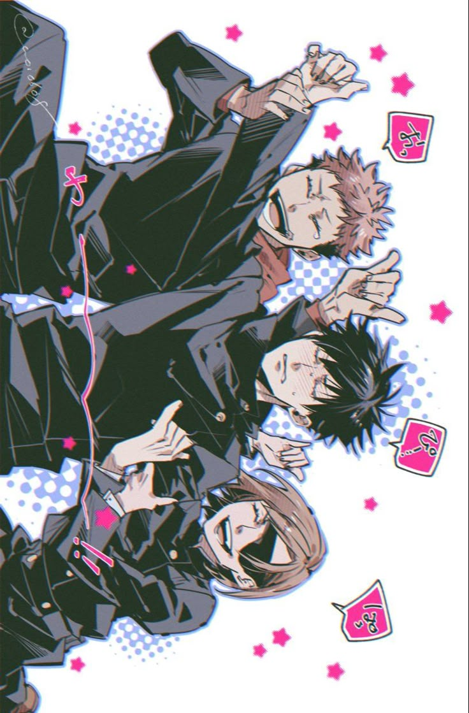
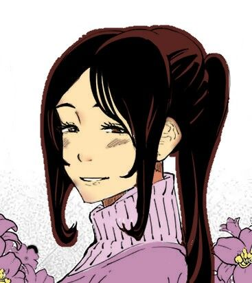
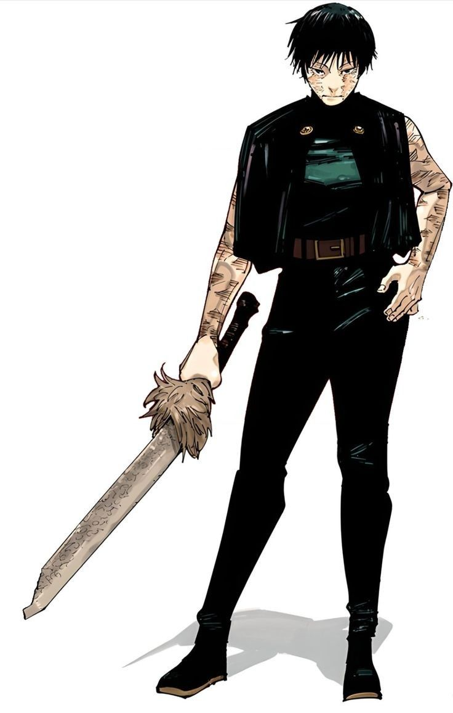
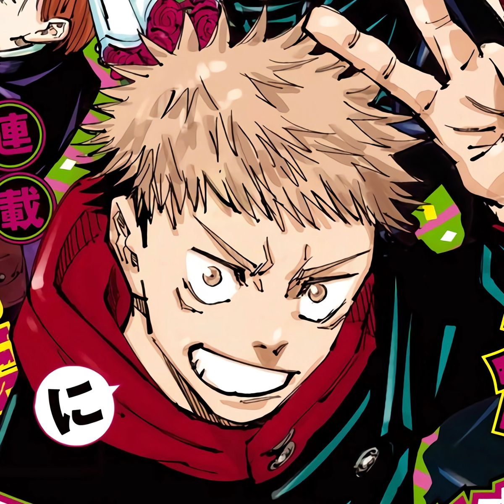
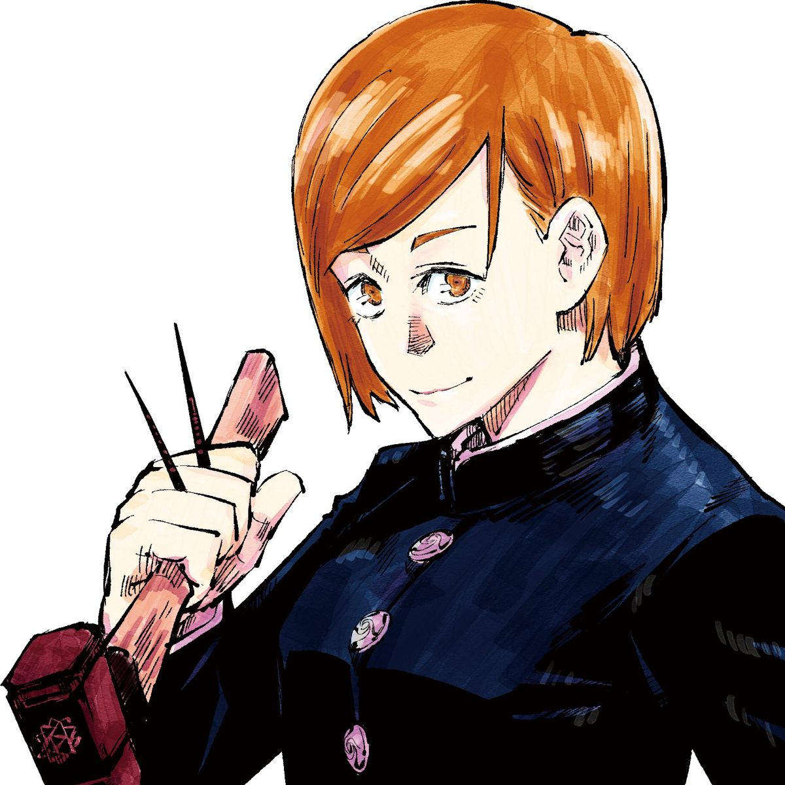
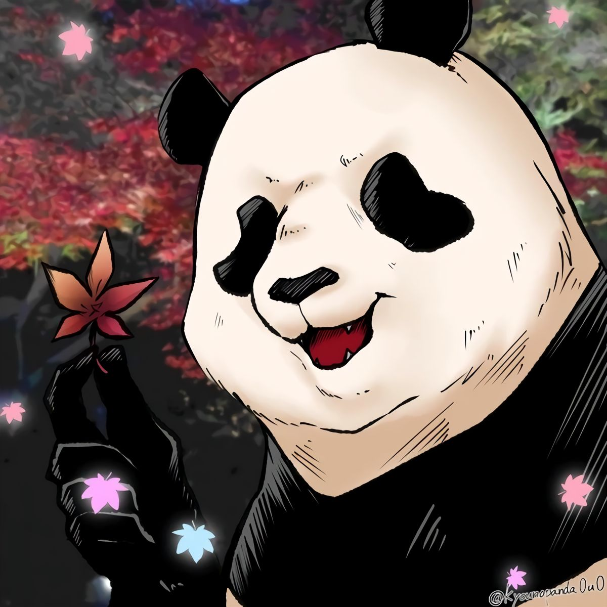
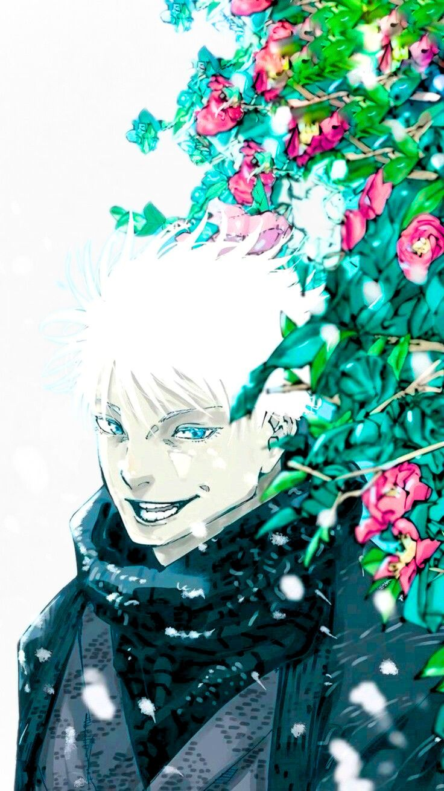
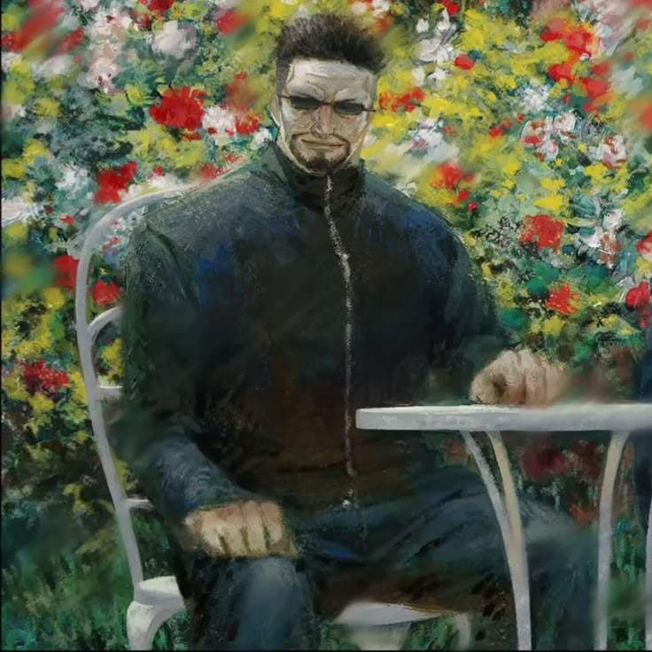
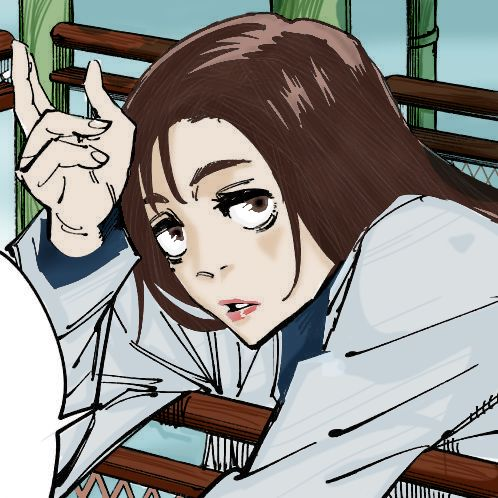

Vínculos
Las personas que marcaron a la historia de Megumi Fushiguro.

Ramas de Relaciones
Los vínculos más importantes de Megumi definen su historia, su moral y sus mayores motivaciones para proteger a los demás.
Familia


Amigos



Maestros


